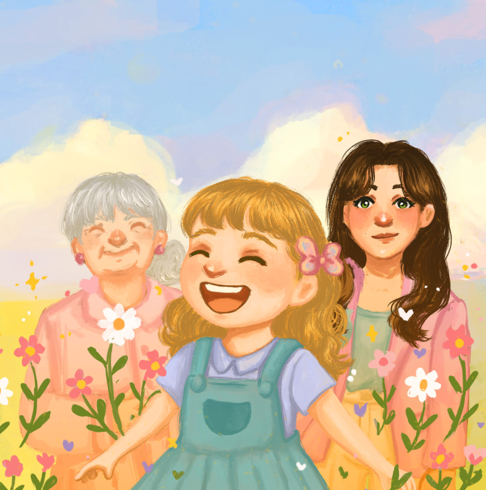
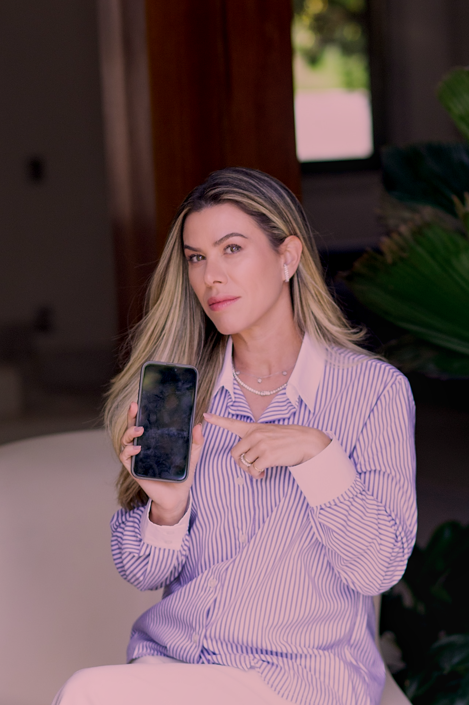

O Que Faço?
01

Servidora Publica
Graduada em Direito. Servidora pública há 20 anos. Atualmente me dedico à área de Direito Previdenciário no Tribunal.
02
ESCRITORA
Obra Literária "O Amor Cabe em Todos os Colos" Editora Inverso.
03
CRIADORA DO CURSO FILHOS SEGUROS ONLINE (EM BREVE)
Curso baseado no Método M.E.T.A. que mostra passo a passo como proteger seus filhos na internet com segurança, clareza e sem precisar entender de tecnologia.